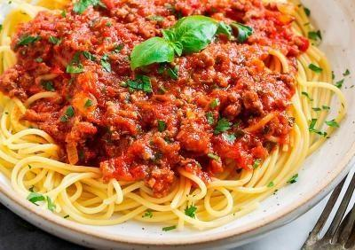
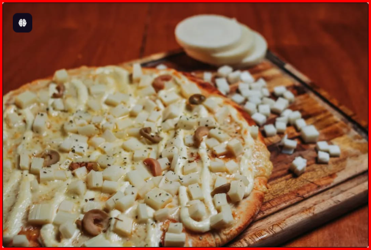
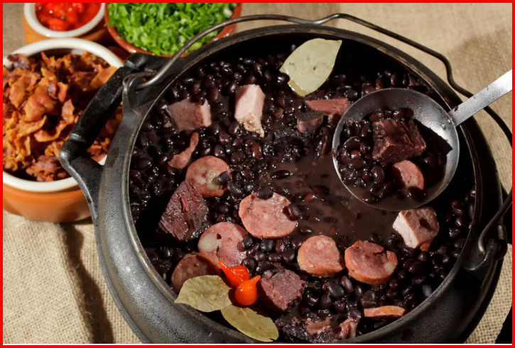
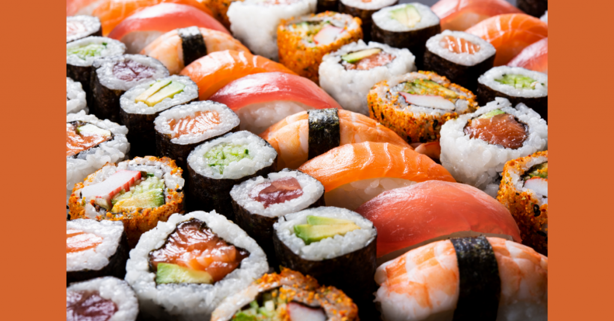
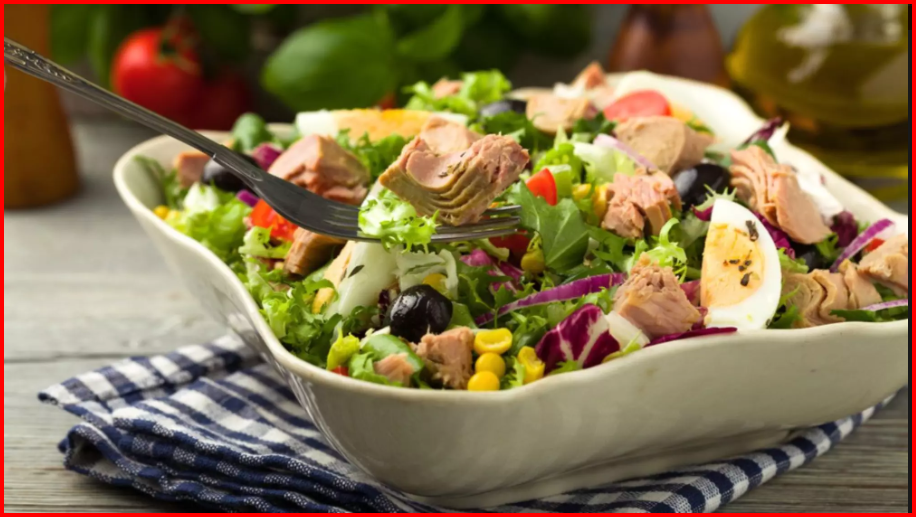

Minhas comidas favoritas
Abaixo estão listadas algumas das comidas que mais gosto:
- 🍝 Macarronada à bolonhesa – um clássico de domingo com muito molho e queijo ralado.
- 🍕 Pizza de calabresa – perfeita para compartilhar com os amigos.
- 🍛 Feijoada – sabor tradicional brasileiro, completa e cheia de história.
- 🍣 Sushi – leve, elegante e ótimo para ocasiões especiais.
- 🥗 Salada Caesar – ideal para dias mais leves, sem perder o sabor.
Galeria ilustrativa




